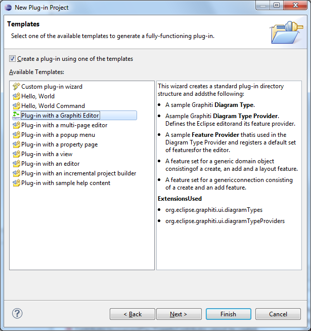
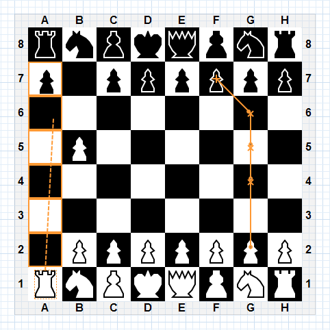
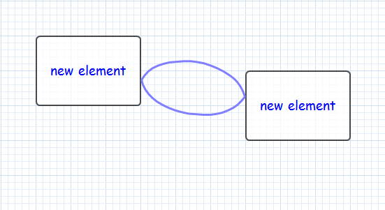
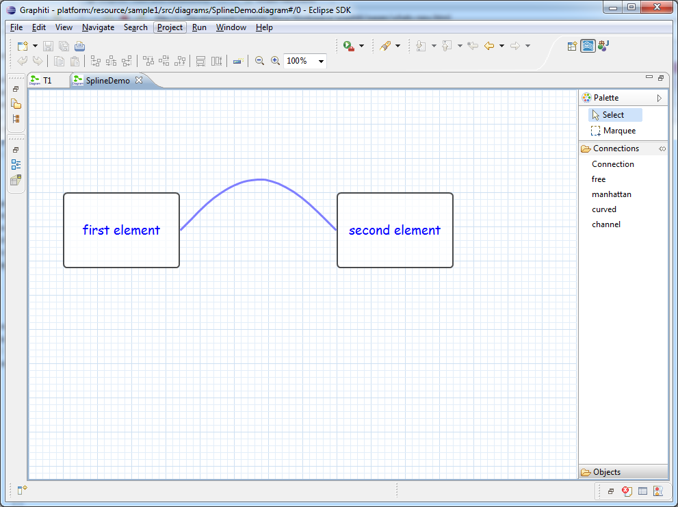
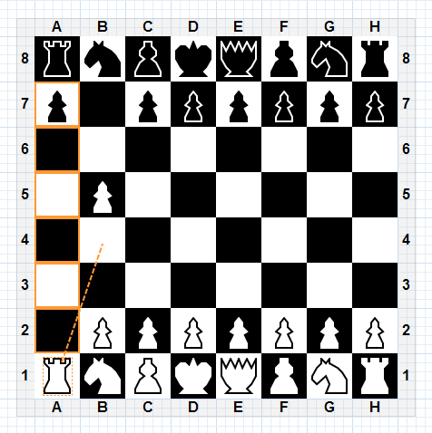

Last revised May 23, 2012
This document describes the new development topics that were addressed during the milestones towards the release 0.9.0 within the Juno release train.
RC1 |
|
| The main focus for this milestone has been set on bugfixing. | |
| Bug 371717 | A bug in synchronizing the feature execution on the Graphiti command stack has been solved. Clients are now able to execute features also from other threads. |
| Bug 377783 | The Graphiti debug feature has been enhanced to allow users to dump not only the tree of the shapes on a diagram but to also inlcude the connections into that dump. |
| Bug 378301 | A rendering issue has been solved that lead to a small gap between the right-hand end of a connection and its anchor shape has been solved. |
| Bug 379788 | A memory leak in the Graphiti Diagram Editor has been fixed. A listener registered to the editing domain by the DefaultMarkerBehavior is now removed when the editor closes. |
| Bug 379836 | A stack overflow in case of an invalid shape hierarchy has been fixed. The user now gets a hopefully more helpful error stating the invalid object. |
M7 |
|
| The main focus for this milestone has been set on | |
| Plug-in Project Creation Wizard | Graphiti now provides a wizard that helps
starting a new editor project. It's hooked into the Eclipse create
new Plug-in Project Wizard and allows to create the relevant
extensions to the Graphiti extension points and generates a basic
version of a feature set to create, add and layout a new shape type
and connections between these shapes.  |
| Modification of Selection and Hover State for Anchors | Graphiti now allows clients to change the way anchors are shown when they are selected or hovered over. Until now this was possible only for shapes and connections. |
| Modification of the Name of the Generic Context Buttons | Graphiti now allows to clients to change the name and description of the generic context buttons (delete, remove, update) by simply overriding the getName() and get Description() methods in their features. |
| Undo/Redo is now Possible after Saving | The Graphiti Diagram Editor now allows users to trigger undo/redo even after the editor has been saved. Until now the undo/redo stack was cleared while saving the editor, blocking undo after that operation. Now all editors can be undone or redone without hitting that block. |
| Hide Underlying Text while Direct Editing is Enabled | For MultiLineText shapes the current text is now hidden when direct editing is enabled. Showing both texts (the current one on the diagram and the edited one in the direct editing popup) was irritating and looked ugly. |
| Documentation of Graphic Algorithm Properties | A section in the Graphiti documentation in Graphic Algorithm properties has been introduced. It answers some questions that were aften asked on the effect of these properties. |
| Link with Editor Example | The Graphiti tutorial implementation now provides an example how to implement the Eclipse functionality "link with editor" for the Project Explorer. |
| Bug 375533 | A bug in the copy and paste implementation of the tutorial causing an update issue has been fixed. |
| Bug 361414 | A bug in the copy and paste framework functionality that enabled pasting at too many locations has been fixed. Allowing to paste at some of these locations confused users. |
| Bug 374744 | A bug in the usage of the local transfer object in the copy and paste framework functionality has been fixed. |
| Bug 374918 | A standard copy and paste functionality of the Graphiti framework is now based on the usage of the local transfer object and does not use additional transfer objects. |
| Bug 374701 | A bug in the location calculation of the paste context has been fixed. When a diagram was scrolled or zoomed a wrong location was set to the paste context. |
| Bug 378083 | The Diagram Editor did not get the focus after a drop operation took place into a diagram. |
| Bug 368124 | A bug in the calculation of the position of text decorators for connections has been fixed. |
| Bug 370440 | A bug in the rendering engine that caused lines to be visualized thicker than they should be has been fixed. |
| Bug 374190 | A bug in the rendering engine, causing a rotated text to disappear, has been fixed. |
| Bug 376008 | A bug in the Diagram Editor has been fixed that caused NullPointerExceptions while browsing through the list of recently opened editors. |
| Bug 371513 | A bug in the Diagram Editor causing a NullPointerException in a special situation has been fixed. |
| Bug 378342 | A bug in the Diagram Editor causing that only the first diagram in an EMF resource could be opened has been fixed. |
| Bug 375037 | A bug in the SVG export causing an exception has been fixed. |
| Bug 369241 | A bug in the SVG export has been fixed so that rotated objects are now also rendered correctly in the exported SVG file. |
| Bug 373298 | A resource leak in the Graphiti framework with respect to font handling has been fixed. Tooltip fonts were not freed correctly. |
| Bug 376544 | A bug in the Graphiti framework with respect to reconnecting a connection has been fixed. In case of source and target anchors being identical, source and target were swapped. |
| Bug 377475 | A bug in the AbstractCustomfeature has been fixed. Clients may have run into infinite recursions causing an exception. |
| Bug 375122 | A typo in the turial plugin.xml has been fixed. |
M6 |
|
| The main focus for this milestone has been set on rounding off the Graphiti functionality by providing some features requested (and partly contributed) by the community. Also several bugfixes are part of this milestone. | |
| Border and Color Decorators | Graphiti supports new decorator types for
shapes (besides the already supported Image decorators). It is now
possible to add decorators that change the way the border or the
colors of a shape are displayed without modifying the diagram
itself. This could e.g. be used to highlight possible target shapes
while drawing a connection; the following screenshot shows the Chess
Example while drawing a move connection.  |
| Composite Connections | Graphiti again supports a new connection
type: Composite Connections can group Curved Connections (Splines)
now. This set of connections appears as one connection with several
lines to the user. Note that this new connection type is
still experimental and that its API might be subject to change in
upcoming versions.  |
| Make Graphics Algorithm Service Extensible | The Graphiti service to create Graphics Algorithms can now be extended by clients to change the default settings for the involved attributes. By doing that it is e.g. possible to define an own default font and size that is used for Text and MultiText objects created within one tool. The affected class GaServiceImpl has been moved to a public API package and has been adapted accordingly. |
| Advanced Property Sheet Support | It is now possible to define Eclipse AdvancedPropertySheets using only official Graphiti APIs; they appear as a standard table format property sheet within a tabbed property sheet page. To enable that there are new base classes (org.eclipse.graphiti.ui.platform.GraphitiShapeEditPart and org.eclipse.graphiti.ui.platform.GraphitiConnectionEditPart) that can be added to the plugin.xml instead of the formally needed internal classes. For more details on this see the linked bug and the documentation on creating property sheets for diagrams. |
| Feature for Export Functionality | There is now a new Eclipse P2 feature that wraps the export functionality (export diagram as SVG graphics) that can be used to install this functionality along with the Graphiti framework only. Before the export functionality could only be installed with the complete SDK including also the samples. |
| Anchor Documentation | The documentation on anchors has been improved, all anchor types are explained now and there's an example code snippet how to use them. |
| Export Diagram Improvements | A bug in the export for large diagrams has been fixed. It is now possible to export much larger diagrams. In the cause of this bugfix a new "export to PNG" functionality has been added. |
| Bug 371671 | A bug in the dark feature processing mode causing an add feature to return null has been fixed. |
| Bug 369370 | A bug in updating the context button pad for nested shapes has been fixed. |
| Bug 365536 | A bug in the size calculation for Texts has been fixed that caused unnecessary ellipsis showing in certain situations. |
M5 |
|
| The main focus for this milestone has been set on finalizing the Graphiti API especially in the Diagram Editor area. Also some functional enhancements are part of this milestone. | |
| Move DiagramEditor base classes to public API | The Graphiti Diagram Editor has been moved to a public package and has been reworked to offer a better and more understandable API now. It has been split into several classes to achieve a better separation of concerns and to avoid one huge DiagramEditor class. The different aspects have been separated into several Default*Behavior classes clients can exchange to modify the default behavior. The API has been cleaned up, unneeded methods have been removed, some methods have been made accessible to clients in cases where we see the need to modify the behavior of the editor. Also classes around the editor have have been reworked to be easier to understand and to be leaner. This especially affects the DiagramEditorInput, which has been stripped down to no longer hold a reference to the diagram object itself and an editing domain. It only holds a URI that can be used to gain hold of the diagram. The changes make it easier for clients to change the editor behavior while being able to reuse most or parts of the standard functionality. Another goal we wanted to achieve was to keep as much of the original API and functionality available (although probably moved to another class) to make adoption by clients as easy as possible. Nevertheless this is a breaking change in non-API classes that were referenced by many users, so clients might need to adapt their coding after migrating to M5. |
| Editor Listener Optimizations | The listeners (EMF adapters) that are installed for a Diagram Editor have been optimized. Similar tasks are now done in just one listener instead of several. Together with the task of the editor API rework it has been eased to replace listeners by client functionality and the JavaDoc describing the listener purposes has been enhanced. |
| Curved Connections | Graphiti supports a new connection type now: Splines can now be used for displaying curved connection.  |
| DirectEditingFeature with Custom Type | An enhancement in direct editing has been implemented: clients can now provide their own cell editors for direct editing. Simply set the direct editing type to TYPE_CUSTOM (TYPE_DIALOG has been renamed) and implement the interface org.eclipse.graphiti.ui.platform.ICellEditorProvider in the direct editing feature. By doing that you can hook in your own cell editor that will be used during direct editing. |
| Images can be Scaled | Graphiti images (graphics algorithm subclass Image) support now scaling. If a vertical and horizontal scale factor is set, it is now reflected in the diagram. Also the proportional flag is evaluated correctly. |
| Selection Width of Connections is now Setable | The selection width for connections (how far the tool user can click besides a connection ans still select it) is now configurable by the method getLineSelectionWidth(Polyline polyline) in the tool behavior provider. |
| Rework UI Dialogs | The Graphiti form-based UIs were reworked and cleaned-up. This affects mostly the print and save-as popups. |
| Improve Tutorial with theory behind of styles and new create-"plain"-methods | The Graphiti tutorial now correctly describes the Styles concept that can be used to define coherently looking shapes. Also there's a chapter describing the theory behind Styles in the online documentation now. |
| Extend JavaDoc of IGaCreateService | The JavaDoc of the Graphiti creation service for graphics algorithms has been improved; e.g. it describes all the default value now. |
| Bug 324556 | A bug in the selection propagation to GEF has been fixed that prevented an easy way of implementing hiding and showing shapes to enable a simple collapse/expand functionality. |
| Bug 348844 | A bug causing a file conflict dialogue misbehavior (popup appearing after each editor change) has been fixed. |
| Bug 368146 | A bug causing a runtime exception during SVG export has been fixed. |
| Bug 367204 | A bug causing the method addIfPossible in the AbstractFeatureProvider to always returns null has been fixed. |
| Bug 367552 | An error in the Graphiti documentation has been fixed. |
M4 |
|
| The main focus for this milestone has been set on implementing round-offs especially in the area of custom anchors and styles. | |
| Ease use of styles | To ease the usage of styles in Graphiti, there are now new methods (createPlain...) in the creation service for graphics algorithms that create graphics algorithms without any attributes set; by that one can directly use styles to define the properties of the graphics algorithms, without having to reset any attributes. |
| Documentation on Styles | The Graphiti tutorial has been reworked to explain the styles concept in a better and deeper way; this affects both the written version in the Eclipse help system and the tutorial plugin that is part of the SDK download. The new documentation also reflects the new styles related creation methods for graphics algorithms as described in the Ease use of styles entry for M4. |
| Decorators for Connection Texts | Graphiti now allows to add decorators to connection texts that do not overlap the text itself. This was not possible so far because decorators were added directly to the shape which was in this case the text itself. Users can simply add decorators to texts now and can now position them by the standard means as they like and are used to in other shapes. |
| Hiding of Selection Tools | It is now possible to hide the connection tools from the palette of the diagram editor. There are 2 new methods (isShowSelectionTool and isShowMarqueeTool) in the tool behavior provider that allow clients to modify the standard behavior and hide the selection tool and/or the marquee tool from the palette. |
| DefaultDeleteFeature allows Access to setDoneChanges | Subclasses of DefaultDeleteFeature can now use the standard behavior to indicate that no changes have been made while performing (or rather not performing) a delete operation. This has been achieved by increasing the visibility of the method setDoneChanges to allow clients to access and override it. |
| Disabling the Context Buttons | End users of Graphiti editors can now prevent that the context buttons will appear when hovering with the mouse over a shape. This can be done permanently using a toolbar button or by holding the Control key (Command key on OS X) while moving the mouse. |
| Alligned FixPointAnchor and BoxRelativeAnchor | The behaviour of FixPointAnchors and BoxRelativeAnchors is now aligned, especially dragging a connection from a FixPointAnchor now works as it did for BoxRelativeAnchors already before. In the cause of processing this bug the coding on Graphiti side was very much streamligned. |
| Angle of MultiText | Until now MultiTexts could not be rotated although the angle attribute could be set for them. Now the method setAngle() has an impact in the graphical representation. The angle is specified in degrees, 0 degrees corresponds to the 3 o'clock position. A positive value indicates a clockwise rotation while a negative value indicates a counter-clockwise rotation of the text. The developer is responsible for the correct size and location of the MultiLineText GA. |
| Nested Anchor Shapes | Graphiti now supports drawing nested shapes for representing anchors. These shapes can now be defined for FixPointAnchors and BoxRelativeAnchors and are correctly rendered by the framework. |
| Bug 355968 | An issue in the calculation of the position of FixPointAnchors and BoxRelativeAnchors caused a presentation issue in some cases. This has been fixed and the anchors are displayed at the correct location now in all cases. |
| Bug 352440 | A bunch of warnings inside the Graphiti framework coding has been removed, especially caused by the need to be compatible with the Eclipse 3.6 version of GEF (3.6). Now Graphiti switched to support a minimal version of GEF 3.7 (part of Eclipse Indigo) at least and therefore was able to remove some GEF deprecations warnings. Also some further warnings in Graphiti coding have been removed. |
| Bug 361932 | Graphiti is now source compatible with JDK 1.5. This was done to ease integration with some modeling projects that use this Java version. Now users will be able to run the Graphiti framework on top of Java 5 |
| Bug 363539 | A missing implementation of the method executeFeature in the dummy editor caused dark feature processing to fail. |
| Bug 364035 | Fixed a bug in DefaultReconnectionFeature that made it hard for clients to force a connection to a specific anchor. |
| Bug 363464 | The method layoutPictogramElement in AbstractFeature now returns an IReason object that indicates the result of the layout operation. |
| bug 364124 | Fixed typo errors in the tutorial documentation. |
M3 |
|
| The main focus for this milestone has been set implementing round-offs both in functionality and documentation. | |
| New Chess Diagram Example | The Chess Diagram Editor as shown in a demo at EclipseCon Europe 2011 is now part of the Graphiti samples and available as part of the Graphiti SDK download. A screenshot of the tool can be seen in the next entry. |
| State Callbacks during Connection Creation | Graphiti now offers state callbacks during
the creation of a new connection. There are hooks for starting and
ending a connection, but also for the state when the connection is
attached to its source anchor. This allows for example highlighting
of allowed targets for the connection.  |
| State Callbacks during Reconnect | The reconnection feature now provides a hook that allows the tool developer to react to reconnect cancellations. |
| Allow Paste to Location | The paste context now provides additional information about the location of the paste operation to allow pasting to a user-defined location. |
| Provide Resize Direction | The resize context now provides additional information on the direction in which the shape is being resized to allow e.g. better placement of child shapes. |
| Unconditional Editor Refresh | The Graphiti diagram editor now offers an unconditional refresh mode. Tool developers can enable this mode by overriding the isAutoRefreshXXX methods in the tool behaviour provider. |
| Documentation | The complete Graphiti documentation has been reformatted, is easier to read and looks much nicer now. Besides some bugs in the documentation and the tutorial have been fixed and some smaller gaps especially in the styles concept have been filled. |
| Bug 359221 | Connection were not removed on the removal of their originating anchor. |
| Bug 359222 | Moving an anchor shape caused jumping of that shape. |
| Bug 359928 | Fixed a minor initialisation issue in DiagramEditorBehaviour. |
| Bug 360800 | The background colour attribute for Texts was ignored. As an effect of this fix Graphiti introduced version numbers for diagrams; for older versions than 0.9.0 the Graphiti diagram editor will perform an auto migration of the background colour attribute of Text objects to correctly display the background colour (this behaviour can be changed by the tool developer). For details on this please have a look into the bug report. Involves diagram migration! |
| Bug 359112 | Fixed an issue in resizing of the direct editing field for connection decorators. |
| Bug 357878 | Fixed a strange behaviour when adding bendpoints. |
| Bug 359526 | Fixed a NullPointerException in the refresh handling for non file-based editors. |
M2 |
|
| The main focus for this milestone has again been set on bugfixing and implementing round-offs. Besides project related tasks were focused. | |
| Bug 357764 | Fixed an index out of bounds exception during refresh in connection with rendering decorators. |
| Bug 352200 | The method moveShape in the default move feature is no longer final. |
| Reworked styles | The styles concept in Graphiti has been reworked. There are new creator methods for graphics algorithms that do not set any default attributes (createPlain...) that prevent you from having to reset certain attributes in order to enable the value set at a style. For details see Bug 352542. |
| Bug 355401 | Fixed performance issue with printing under Linux. |
| Bug 356090 | Fixed bug with hasDoneChanges for delete feature in patterns. |
| Bug 354824 | Fixed bug in positioning within FixPointAnchors. |
| Bug 352220 | Cleaned-up the disabling of guides inside the editor. Note: this can affect tool builders since this is a - very minor - change in API. |
| Bug 355027 | Fixed a bug in moving connection decorators in a zoomed diagram. |
| Bug 355347 | Fixed a bug in colours and fonts that invalidated the Graphiti object management. Colours and Fonts are now immutable. Note: this can affect tool builders since this is a small change in API. |
| Bug 356218 | Fixed a bug in auto update at startup that caused the editor to open dirty in any case. |
| Bug 356828 | Fixed a bug in editor title decoding. |
| Bug 351226 | Improved editor behaviour when renaming or deleting a file. |
| Bug 357411 | Removed some unnecessary reflection coding. |
| Bug 357417 | DiagramEditorInput now adapts to IFile. |
| Bug 357549 | Fixed a bug in setting names and descriptions for creation entries. |
| Bug 355968 | Enabled ChopBoxAnchors to define a reference point for connections. |
M1 |
|
| The main focus for this milestone has been set on bugfixing and implementing round-offs. Besides project related tasks were focused. | |
| Git Migration | Graphiti sources have been moved from CVS to Git. |
| Bug 352709 | Invalid image provides no longer cause the editor to crash. |
| Bug 333985 | Documentation for Accessibility support for F2 is now available. |
| Bug 339185 | Documentation on reconnection feature is now available. |
| Bug 348634 | Fixed the bug that direct editing got invoked again if mouse was placed over the edit field. |
| Bug 348637 | Fixed sizing bug in direct editing text decorator. |
| Bug 348662 | Fixed bug in removing tooltips. |
| Bug 348772 | Fixed spelling error in DefaultToolBehaviourProvider API. - Note: this can affect tool builders since this is a - very minor - change in API. |
| Bug 350261 | JAR files get now packed in the central build. |
| Bug 350273 | Central Eclipse license feature is no used. |
| Bug 351053 | Tool builders are more flexible to use other command stacks. |
| Bug 349439 | Eased to use Graphiti in an RCP scenario. |
| Bug 350830 | Tutorial has been updated to correctly reflect selection border behaviour. |
| Bug 345748 | Graphiti ZIP file created in nightly uses time stamp in file name to avoid caching issues. |
| Bug 334402 | Fixed issues with caching image descriptors. |
| Bug 323037 | Enabled right click selection on diagram background. |
| Palette Removal | It is now possible to completely remove the palette from the editor |